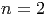
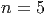
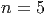
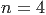
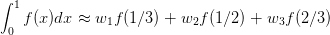

O método de Adams-Bashforth consiste de um esquema recursivo do tipo:
=======
=======
>>>>>>> 2f43bff4df7198ad5fd8ebe602c2f00c0d1ecf01
=======
>>>>>>> a89bb6fd5bd3faff679a502c98ff65257591aa83
O método de Adams-Moulton consiste de um esquema recursivo do tipo:
Exemplo 9.7.1. Adams-Moulton de quarta ordem
=======
A quadratura de Gauss-Legendre de
Solução.
No Scilab:
Solução.
Solução. Para tanto, fazemos a mudança de variáveis :
E, então aplicamos a quadratura gaussiana nesta última integral.
E 9.6.1. Encontre aproximações para a seguinte integral via Gauss-Legendre
com
E 9.6.3. Calcule numericamente o valor das seguintes integrais usando a
quadratura de Gauss-Legendre para os seguintes valores de
No exemplo a seguir, apresentamos um problema envolvendo uma equação
não-autônoma, isto é, quando a função O esquema recursivo de Euler fica: Comparação
>>>>>>> 2ce5bba22e77a9b0d17e57fb0d2efc8029204145
O método de Adams-Moulton é implícito, ou seja, exige que a cada passo,
uma equação em
No exemplo 10.1.4, mostramos como o Método de Euler pode ser
facilmente estendido para problemas envolvendo sistemas de equações
diferenciais..
Exemplo 10.1.4. Escreva o processo iterativo de Euler para resolver
numericamente o seguinte sistema de equações diferenciais Para aplicar o Método de Euler a um sistema, devemos encarar as diversas
incógnitas do sistema como formando um vetor, neste caso, escrevemos:
9.7 Métodos de passo múltiplo - Adams-Moulton
>>>>>>> 8ffe51d4bbc8f1e500cc9c435f05cb1c6f0ffef3
![(n+1) (n) h [ ( (n) (n)) ( (n-1) (n- 1)) ( (n-2) (n-2)) ]
=======
src=](main4318x.png)
9.6 Quadratura de Gauss-Legendre
 pontos é o esquema numérico
pontos é o esquema numérico
 .
.
 pesos e  abscissas é equivalente a
um sistema não linear com
pesos e  abscissas é equivalente a
um sistema não linear com  equações e
equações e  incógnitas.
incógnitas.

 .
.
![wj = (-------2)---------.
1 − x2j [Pn′(xj)]2](main3993x.png)
n 

1 0 2
2 
1
3 0

 4
4 


 I4=f(x4(1))*w4(1)+f(-x4(1))*w4(1)+f(x4(2))*w4(2)+f(-x4(2))*w4(2)
I4=f(x4(1))*w4(1)+f(-x4(1))*w4(1)+f(x4(2))*w4(2)+f(-x4(2))*w4(2)

 deff(’y=f(u)’,’y=sqrt(1+(u+1)^2/4)/2’)
deff(’y=f(u)’,’y=sqrt(1+(u+1)^2/4)/2’)
I3=f(0)*w3(1)+f(x3(2))*w3(2)+f(-x3(2))*w3(2)
I4=f(x4(1))*w4(1)+f(-x4(1))*w4(1)+f(x4(2))*w4(2)+f(-x4(2))*w4(2)
I5=f(0)*w5(1)+f(x5(2))*w5(2)+f(-x5(2))*w5(2)+f(x5(3))*w5(3) ...
+f(-x5(3))*w5(3)

Exercícios
 e pontos e compare com o valor exato
e pontos e compare com o valor exato

 :
:
n 





 depende explicitamente do
tempo.
depende explicitamente do
tempo.


 seja resolvida.
cuja solução exata é
seja resolvida.
cuja solução exata é 
 e
e  .
.
 Observe que este processo iterativo é equivalente a:
Observe que este processo iterativo é equivalente a: 

>>>>>> 2ce5bba22e77a9b0d17e57fb0d2efc8029204145 id="tailmainse44.html"> =======
======= >>>>>>> 4e9787bf4bba34ce830980dc83a8fe1bee8ad2ee![(n+1) (n) h-[ ( (n) (n)) ( (n-1) (n-1))]
=======
src=](main4317x.png)


 e
e  pontos.
pontos.


 .
.